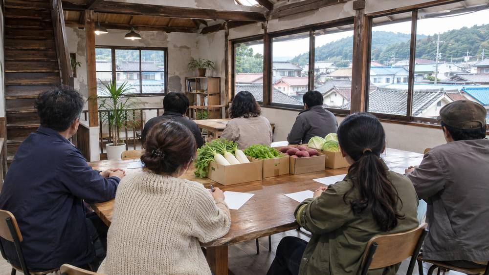

사회
협동조합·사회적기업이 함께 쓰는 '혁신허브' 6곳…청도는 옛 보건소, 칠곡은 공공구매 연결
행안부, 고양·안성·청도·칠곡·부여·홍성 선정…민관협의체가 운영 모형 짠다 / 「사회연대경제기본법」 2027년 3월 16일 시행 앞둬

베란다 태양광 지자체 수요 1만3,629가구, 정부 목표 10만 가구의 13.6%
한국에너지공단 7월 조사에서 56개 지자체 참여 의사, 필요 국비 약 39억 원은 추경 375억 원의 10.4%

대전시, 세계태양광총회 개막 기념 시민 에너지 걷기 열어 사전 신청 1,500명 참여
대전엑스포시민광장에서 한밭수목원까지 QR 미션 4개, 에너지 OX 퀴즈와 체험 6종은 DCC에서 진행

호주 농촌 마을 3곳 연구, 재생에너지엔 찬성하나 협의·이익공유는 불공평하다는 인식
청정에너지협의회 집계 141개 사업 325억 호주달러 진행 중…빅토리아주는 6월 12일 주민 참여 지침 발표

송전선로 지원금 3분의 2 이내 주변 지역에 배분…주민설명회 2회에서 3회로
기후에너지환경부, 12월 1일까지 입법·행정예고…주민이 낸 대안 경과지도 입지선정위원회 심의 대상

서울시의회 오중석 의원, SH 임대단지 태양광 요금상계 현황 공개 요구
LH는 세종 행복주택 238가구에서 요금상계를 시작했고 SH 고덕 온빛채 697가구는 제로에너지건축물 3등급 단지다

사회적기업 국제포럼에 주민 운영 마을 태양광 사례 올라, 국내외 8개 사례 중 태양광은 하나
고용노동부와 한국사회적기업진흥원이 11월 10일(화) 서울에서 연 포럼, 사회적기업육성법 시행 19년 맞아 돌봄·주거·에너지 경험 공유

社会
協同組合・社会的企業が共に使う「イノベーションハブ」6か所…清道は旧保健所、漆谷は公共調達につなぐ
行政安全部、高陽・安城・清道・漆谷・扶余・洪城を選定…官民協議体が運営モデルを作る / 「社会連帯経済基本法」2027年3月16日施行を控え
大田市、世界太陽光会議の開幕記念で市民エネルギーウォークを開催、事前申込1,500人が参加
大田エキスポ市民広場からハンバッ樹木園までQRミッション4つ、エネルギー○×クイズと体験6種はDCCで実施
社会的企業国際フォーラムに住民運営の集落太陽光の事例、国内外8事例のうち太陽光は1件
雇用労働部と韓国社会的企業振興院が11月10日にソウルで開催、社会的企業育成法施行19年を機にケア・住まい・エネルギーの経験を共有
社会
合作社与社会企业共用的“创新枢纽”6处…清道利用旧保健所，漆谷对接公共采购
行政安全部选定高阳、安城、清道、漆谷、扶余、洪城…由官民协议体制定运营模式 / 《社会连带经济基本法》将于2027年3月16日施行
Society
Six "innovation hubs" for cooperatives and social enterprises: Cheongdo to use a former health centre, Chilgok to link firms with public procurement
Interior ministry selects Goyang, Anseong, Cheongdo, Chilgok, Buyeo and Hongseong; public-private councils to shape operating models / Framework Act on the Social Solidarity Economy takes effect March 16, 2027
Balcony solar demand from local governments reaches 13,629 homes, 13.6% of the 100,000-home target
Korea Energy Agency July survey: 56 local governments interested; required national funding of about 3.9 billion won is 10.4% of the 37.5 billion won supplementary budget
Daejeon holds citizen energy walk to mark opening of solar conference, 1,500 pre-registered residents join
Four QR missions from Expo Citizen Plaza to Hanbat Arboretum; energy quiz and six experience booths at the DCC
Study of three rural Australian towns: backing renewables, but seeing consultation and benefit sharing as unfair
Clean Energy Council counts 141 projects worth A$32.5 billion in progress; Victoria issued community engagement guidelines on June 12
Up to two-thirds of transmission-line support funds to go to nearby areas; resident briefings rise from two to three
Ministry of Climate, Energy and Environment holds public notice until Dec. 1; alternative routes proposed by residents to go before siting committees
Seoul Councillor Oh Jung-seok Asks SH to Disclose Net-Billing Status at Rental Estates With Rooftop Solar
LH began net billing at 238 happy-housing units in Sejong; SH's 697-unit Godeok Onbitche is also a zero-energy building grade 3
Social Enterprise Forum Features a Resident-Run Village Solar Case, One of Eight Cases at Home and Abroad
Korea's labour ministry and social enterprise agency held the forum in Seoul on Nov. 10, 19 years after the Social Enterprise Promotion Act took effect, to share experience in care, housing and energy